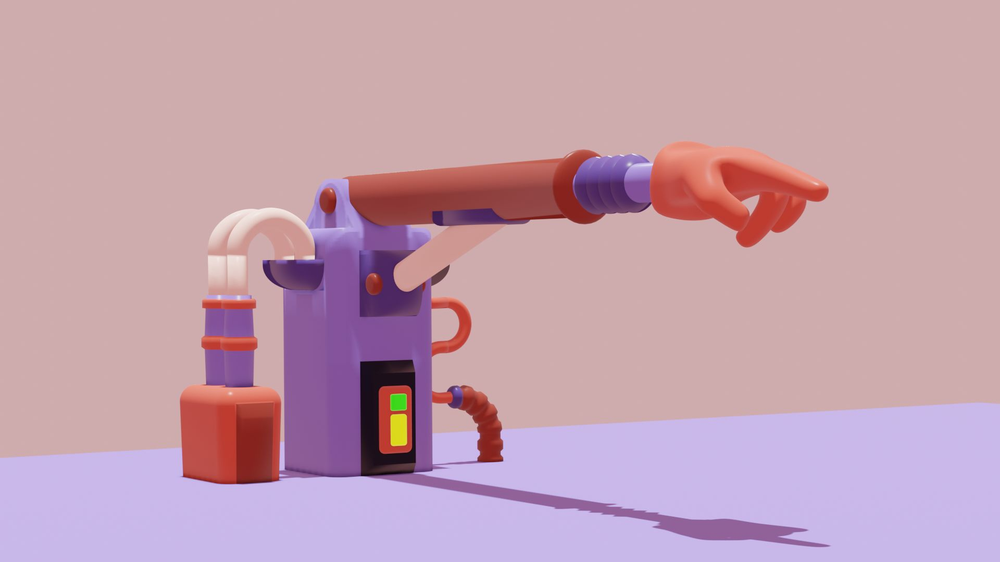

Factory
3D Animation
JAN 2021 · Academic project
→ In collaboration with: José Souto, Maria Sousa & Rita Faria
Widely inspired by a cartoon feel and aesthetic, this project aims to combine the complexity of 3D modelling with the seductiveness of animation.
Using as reference a simple factory line of production, the narrative follows up the full process of the creation of an unique product. All of it is accompanied by a much wanted lighthearted atmosphere and a humorous twist.
The objects that inhabit this production line, act as a cohesive whole through the roundness and smoothness of their shapes. Not forgetting all the carefully given details that contribute for the full personality.
The soft pastel tones give the piece a laidback and dreamy touch, alongside the glossiness of the materials.
Everything comes to life with the animation. The movements combine a realism with a cartoon springy feel.
Wait no more! Watch it here :)
3D modelling and animation by
Elisa Sampaio, José Souto, Maria Sousa, Rita Faria
Video editing by
Rita Faria
Software
Blender, Adobe Premiere